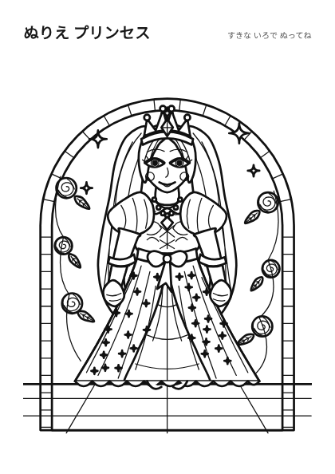

ホーム > ぬりえ
ぬりえ
太い線で描いたぬりえと、くわしい線画のぬりえです。どれも自作のオリジナルで、既存のキャラクターは描いていません。
- ぬりえ くるま太い線
 ぬりえ でんしゃ太い線
ぬりえ でんしゃ太い線 ぬりえ おはな太い線
ぬりえ おはな太い線 ぬりえ さかな太い線
ぬりえ さかな太い線 ぬりえ きょうりゅう(ティラノ)くわしい線画・恐竜
ぬりえ きょうりゅう(ティラノ)くわしい線画・恐竜 ぬりえ きょうりゅう(くびなが)くわしい線画・恐竜
ぬりえ きょうりゅう(くびなが)くわしい線画・恐竜 ぬりえ きょうりゅう(つの3本)くわしい線画・恐竜
ぬりえ きょうりゅう(つの3本)くわしい線画・恐竜 ぬりえ モササウルス(うみ)海の大きな恐竜時代の生きもの・細かい線
ぬりえ モササウルス(うみ)海の大きな恐竜時代の生きもの・細かい線 ぬりえ きょうりゅうの あかちゃんたまごから生まれた恐竜
ぬりえ きょうりゅうの あかちゃんたまごから生まれた恐竜
ぬりえ プリンセスくわしい線画・オリジナル ぬりえ おしろくわしい線画・オリジナル
ぬりえ おしろくわしい線画・オリジナル ぬりえ はる(さくら)くわしい線画・季節
ぬりえ はる(さくら)くわしい線画・季節 ぬりえ なつ(ひまわり)くわしい線画・季節
ぬりえ なつ(ひまわり)くわしい線画・季節 ぬりえ あき(きのこ・どんぐり・はっぱ)くわしい線画・季節
ぬりえ あき(きのこ・どんぐり・はっぱ)くわしい線画・季節 ぬりえ ハロウィン(かぼちゃ)くわしい線画・季節
ぬりえ ハロウィン(かぼちゃ)くわしい線画・季節 ぬりえ ふゆ(ゆきだるま)くわしい線画・季節
ぬりえ ふゆ(ゆきだるま)くわしい線画・季節 ぬりえ クリスマス(ツリー)くわしい線画・季節
ぬりえ クリスマス(ツリー)くわしい線画・季節 ぬりえ クリスマス(リース)くわしい線画・季節
ぬりえ クリスマス(リース)くわしい線画・季節 ぬりえ お正月(だるまと松)くわしい線画・季節
ぬりえ お正月(だるまと松)くわしい線画・季節 ぬりえ 節分(おに)くわしい線画・季節
ぬりえ 節分(おに)くわしい線画・季節 ぬりえ お正月(ひつじ)太い線・季節
ぬりえ お正月(ひつじ)太い線・季節 ぬりえ おひなさまくわしい線画・季節
ぬりえ おひなさまくわしい線画・季節 ぬりえ こどもの日(こいのぼり)くわしい線画・季節
ぬりえ こどもの日(こいのぼり)くわしい線画・季節 ぬりえ ゆきうさぎ太い線・季節
ぬりえ ゆきうさぎ太い線・季節 ぬりえ たなばた(ささかざり)くわしい線画・季節
ぬりえ たなばた(ささかざり)くわしい線画・季節
使い方
- クレヨンや色鉛筆を用意して、好きな色でぬります。
- 線が太いものは、はじめてぬる子向け。細かい線のものは、ぬり慣れてきた子向けの目安です。
- ぬり終えたら、名前を書く欄に名前を書きます。
あわせて使える本
紹介リンクを含みます(Amazonアソシエイト)。書名・著者・出版社・ISBNは書店や国立国会図書館の書誌情報で確認したものです。
- the rocket gold star 絵(ひかりのくに)
- クレール・ファイ 作・絵、板橋まりえ 訳(小学館集英社プロダクション)
- 長田真作 著・編集(マール社)